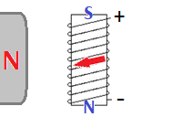

EM Induction
A motor converts electrical energy into mechanical energy.
A generator converts mechanical energy into electrical energy!
- Generators use magnetic forces to transform energy.
- The mechanism for this energy transformation was discovered by Michael Faraday and is called electromagnetic induction (i.e. “inducing” electric forces by the use of magnetism).
- The illustration below shows a simple generator.

- A conductor is moved through a magnetic field.
- The magnetic force (which can be determined using the Third Hand Rule) pushes electrons to one end of the conductor, making it negative and the other end positive.
- Electric potential energy has been produced!
- The ends of the conductor can be used as positive and negative terminals (just like a battery) to power a circuit.
- The voltage produced by a generator is often referred to as the “EMF” (electromotive force).
- Note that EMF is not actually measuring force, but potential difference!
Faraday’s Law
Faraday’s Law states that an EMF will be produced in a circuit if one or more of the following conditions is met:
- The average magnetic field experienced by the circuit changes. (This can be accomplished by moving the circuit and the external magnet closer together or farther apart.)
- The angle between the field and the circuit changes. (This can be accomplished by rotating either the circuit or the magnet. Most practical generators use this method of generating an EMF.)
- The area of the circuit changes. (This requires changing the shape of the circuit.)
Lenz’s Law
Since energy is conserved, the gain of electrical energy must be accompanied by a loss of mechanical energy.
- This observation is known as Lenz’s Law.
- The moving conductor (or magnet) must experience a magnetic force in the direction opposite to the motion whenever electrical energy is being generated.
- We can use this fact to determine the direction of the indeuced current.
Example
Predict whether an EMF will be induced, and if so the location of the North pole and the direction of current flow when the coil is rotated clockwise through a magnetic field directed to the right.

- An EMF will be produced because the angle between the coil and \(\vec{\mathbf B}\) is changing.
- The magnetic force must produce a counterclockwise torque to oppose the clockwise motion.
- The top of the solenoid is South because it is attracted to the North pole of the external magnet.
- The Second Hand Rule gives the direction of the induced current.
- Electrical energy is gained and the solenoid loses rotational energy as electrons move through the solenoid.